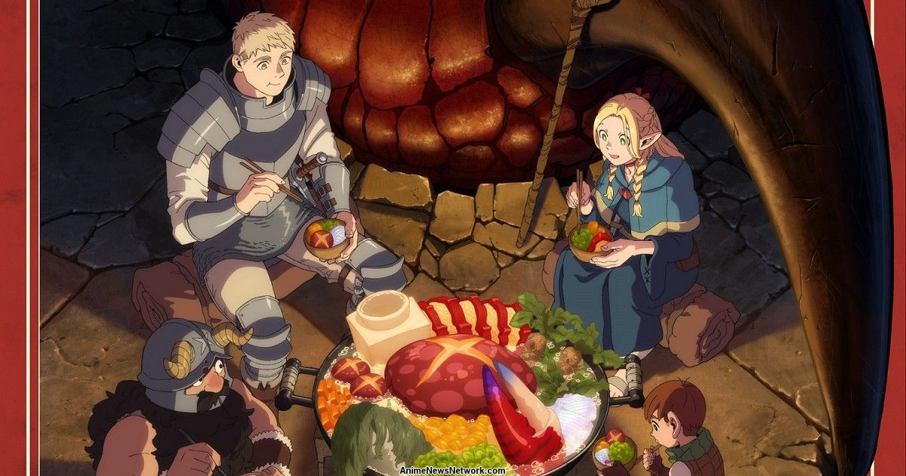

Hello There!
My name is le Sharky Larky and I am a high school student in the United States, I am learning to become a game dev online and a enginner IRL. This is a silly little webiste to host a varity of things I do that have websties such as School projects or passion projects that need a website. It is also a website about ME!!! It has a lot of different things like Random entries and stuff like that! It also includes pictures of wip projects.
ABOUT Sharky
GALLERY
Favorite Anime

I really liked the Dungen Meshi manga so when I heard they were relasing an anime adaptation I was really excited. I really enjoy the anime as it captures the manga in such as good light, though there are a few things
the changed or removed but those are minor. Overall its my #1 favorite currently thought hey havent shown Izutsumi yet as of typing this so its not as good as it could be (lol). I can't wait to see how they animate the
crews silly little seanagens even further.